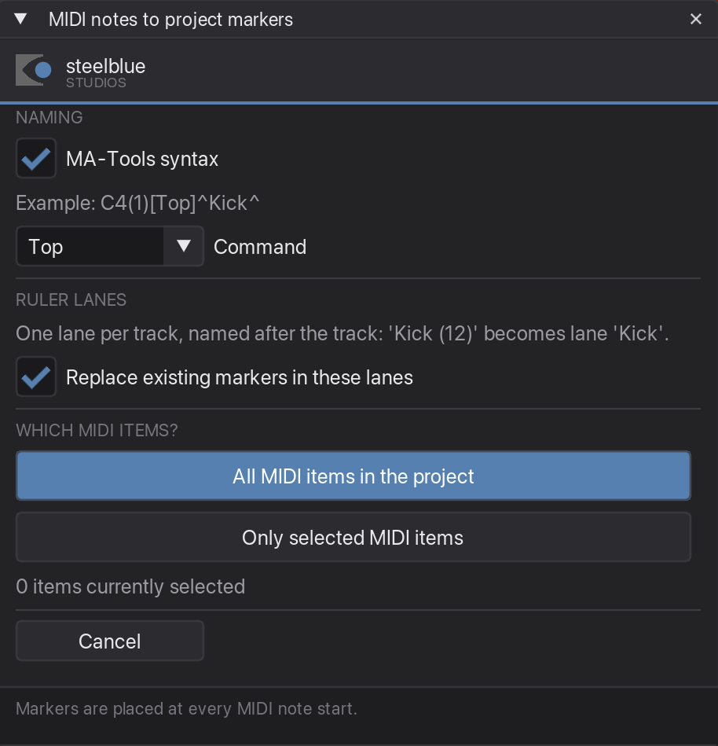
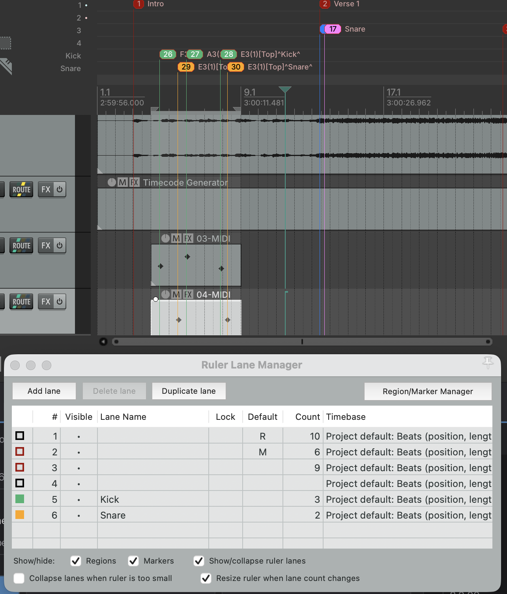

MIDI notes to project markers
Turns every MIDI note into a project marker — one ruler lane per track, named after the track, coloured to match it. Write your cue rhythm as MIDI and get the markers for free.
What it is for
Placing cues by ear, one marker at a time, is slow and never quite tight. Playing them in as MIDI is fast, quantises to the grid, and can be edited like music. This plugin takes that MIDI item and puts a marker at the start of every note.
Each track becomes one sequence: its markers go into their own ruler lane, carry the track's colour, and are named Note(number)[Command]^Track^. A kick track and a hat track are then two clean rows on the ruler and two separate cue lists on the console.
What the names look like
The lane and the sequence are named after the track, with anything in brackets stripped — a track called Kick (12) gives lane and sequence Kick. The bracket stays on the track itself, because the number in it is the MA sequence number.
The cue number is the rank of the pitch within that track, counted upwards. Four different notes give cues 1 to 4; five hits of the same note all give cue 1, which is exactly right — that is one cue fired five times.
| Track | Notes | Markers |
|---|---|---|
Kick (12) | C1 C2 C1 C3 | C1(1)[Top]^Kick^ · C2(2)[Top]^Kick^ · C1(1)[Top]^Kick^ · C3(3)[Top]^Kick^ |
If the track has custom MIDI note names, those are used as the cue name instead of the pitch — but the rank still comes from the pitch.
Step by step
-
Select the MIDI item
Click the item in the arrange view. If you want several, select them all — or skip this and use the whole project in the next step.
-
Open the tab, or start the plugin
Use the MIDI notes to markers tab, or run the plugin in its own window. It tells you how many items are currently selected, so you can check before committing.

The example line under the switch previews the naming, and the count at the bottom tells you what you are about to convert. -
Choose the naming
MA-Tools syntax is on by default: a C4 on a track called Kick becomes
C4(1)[Top]^Kick^, ready to trigger. Switch it off if you just want the plain note name —C4— for example when you intend to run Rename selected markers over them afterwards.Command is a list:
Go,Top,Flash. It is what goes in the square brackets, and the example line shows the result as you change it. -
Check the ruler lanes
Every track gets its own ruler lane, named after the track. The lane is created if it is not there yet, and it takes the track's colour, so the markers and the lane match.
Replace existing markers in these lanes is on, and it empties each lane before writing into it. Leave it on while you are still adjusting the MIDI — otherwise every run stacks another full set of markers on top of the last.
Two tracks with the same name are a problem, because both would produce
^Kick^and the console could not tell the sequences apart. The plugin notices and asks before it writes anything. Kick (12) and Kick (13) count as the same name — the bracket is stripped.Ruler lanes need REAPER 7.72 or newer. On an older REAPER the plugin says so in that spot and writes the names and colours without lanes; everything else is unchanged.
-
Choose the scope
All MIDI items in the project Every MIDI item, regardless of selection. Only selected MIDI items Just what you picked in step 1. Either button starts the run straight away. A box afterwards says what was created.

One lane per track, each in the track's colour, names in MA-Tools syntax.
Good to know
Looped items are followed
If the item loops its source, markers are created for every repetition you can see — across the item's full visible length, not just the first pass.
It warns before flooding your project
Above 2000 markers the plugin counts first and asks whether you really want them. A dense 16th-note pattern over a whole song adds up quickly, and undoing several thousand markers is no fun.
Markers land on note starts
Note length is ignored — only the start matters, which is what a cue trigger needs. So write your cue rhythm with short notes; it makes the MIDI easier to read without changing the result.